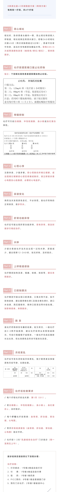

AI
您好，
我是汤立晨主任的助手
ddEC 化疗第 1 周期第六天
9月16
今日随访任务
完成今天的身体状况记录
今天的健康记录已完成
健康记录已完成，还有资料待补充。
汤主任团队 · 专项陪伴
每一天，都有人关心
完成首次设置，开启属于您的 ddEC 健康陪伴。
本人身份信息
为便于医生识别并在入院后核验，请填写演示信息。
团
复旦肿瘤医院乳腺外科汤立晨主任团队绑定团队 · 演示环境
知情同意授权
乳腺癌患者综合治疗陪伴
选择目前化疗方案
专项陪伴将按当前方案安排任务。第一阶段仅开放 ddEC。
请选择 ddEC 后继续选择您更习惯的随访方式。
ddEC 专项陪伴
选择您更习惯的方式
两种方式收集同一组医学信息。此选择将作为默认方式，之后每天仍可切换。
不强制接听电话自主填报连续两次未完成时，后台记录并在您方便接听的时段安排 AI 提醒电话。
ddEC 专项陪伴
陈女士 · 第 1 周期 · 每 14 天一周期，共 4 周期今日完成方式AI 电话随访
D6 · 今日事项今天可完成
有疑问？向汤主任助手说一说
Demo 数据均为虚构。AI 仅做采集、归纳和风险预审，不决定是否化疗、停药或调整剂量。
1 分钟健康自报
D6 · 未完成内容已自动保存完成今日健康记录先说说今天的感受，再确认下方健康记录。
ddEC 方案全流程

上传检验检查
上传检验检查图片
拍照或从相册选择，汤主任助手将自动整理。
血常规 / 检验报告Demo 不上传或保存真实图片
演示识别结果
血常规关键指标
模拟血常规报告 · 本地预审
白细胞绝对计数 WBC2.8 ↓
中性粒细胞绝对计数 ANC1.5
中性粒细胞相对百分比 NEUT%54.2%
淋巴细胞绝对计数 LYM0.86
淋巴细胞相对百分比 LYM%30.7%
血红蛋白 HGB118
血小板 PLT172
识别结果：白细胞减低，其他血象正常，为化疗后常见变化，请继续观察。本次结果未命中已确认的 WBC＜1.0 红色阈值；系统不输出“可以化疗”结论，请由汤主任团队结合原始报告确认。
自由提问
您好，我是汤立晨主任智能助手。我可以帮助您记录化疗相关情况、解释已确认的流程；是否按期化疗、用药或调整治疗，请由汤主任团队结合完整情况确认。